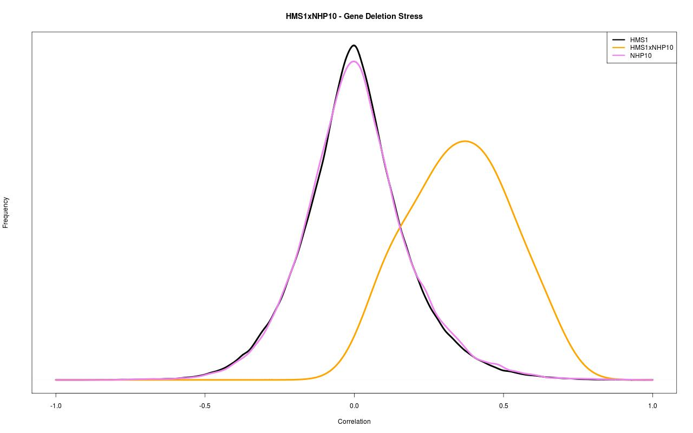
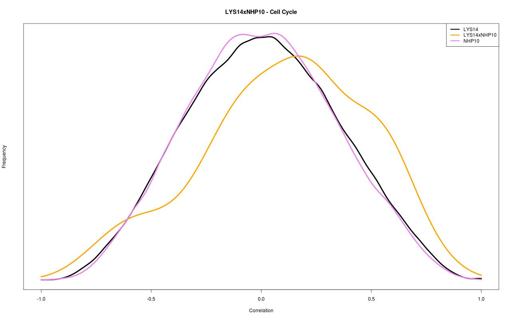
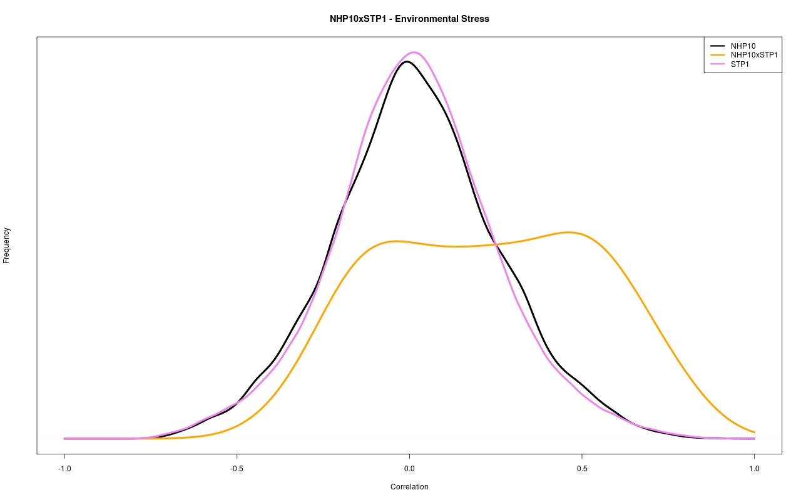
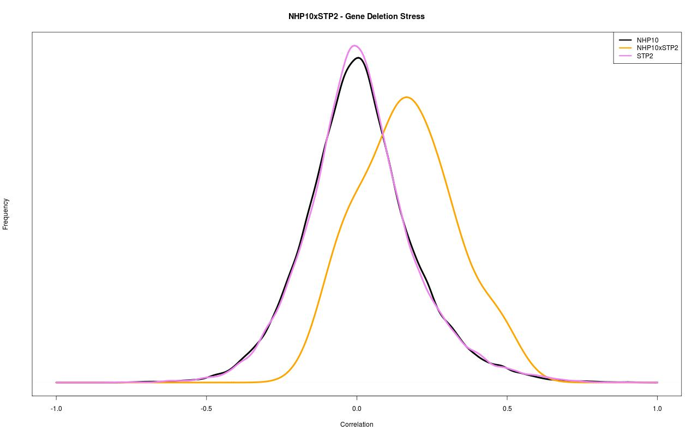
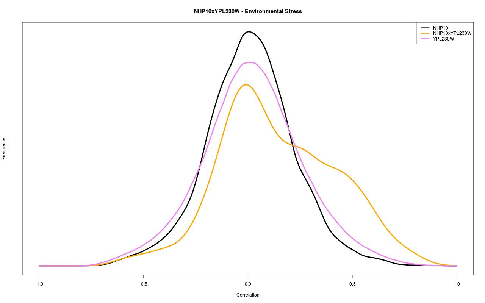

← NHP10 record / TRANSCRIPTION FACTOR INTERACTIONS
NHP10 interaction figures.
Original co-expression distribution plots for the transcription factor pairs in this ScerTF record.









Original co-expression distribution plots for the transcription factor pairs in this ScerTF record.




